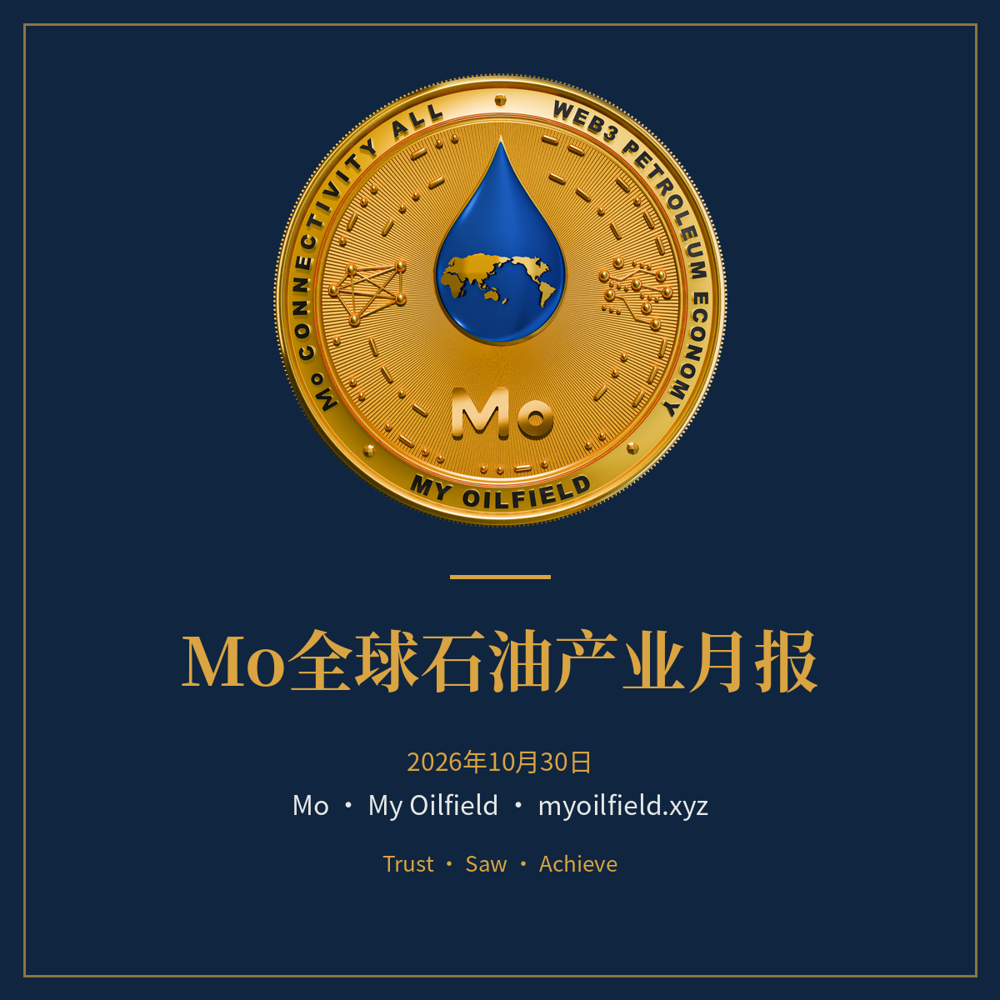

Mo 刊物体系的公开出版物（中文版）：事实与一般市场分析。Mo 自身经营内容见内部《Mo内参》，不在此公开。英文版见 Mo-Reports-EN。
每月最后一个日历日 08:00（北京时间）发布。上半部为上游产业全景，下半部为下游宏观分析。
上游：全球产油国全景、储量与储采比、油井与钻机、世界级大油田、油服、油田基建、在建项目、寻找投资者的油田与区块、OPEC / OPEC+ / IEA、供需与贸易、趋势与竞争格局、乍得与加拿大专节。
下游：石油消费结构、交通燃油、石化与化纤、化肥与农药、医药与日化、食品与包装、行业产值、Mo 与下游的连接。
每周日 20:00（北京时间）发布：产量与钻机变化、价格走势、OPEC 动态、本周大事、展望。首期 2026年11月15日。